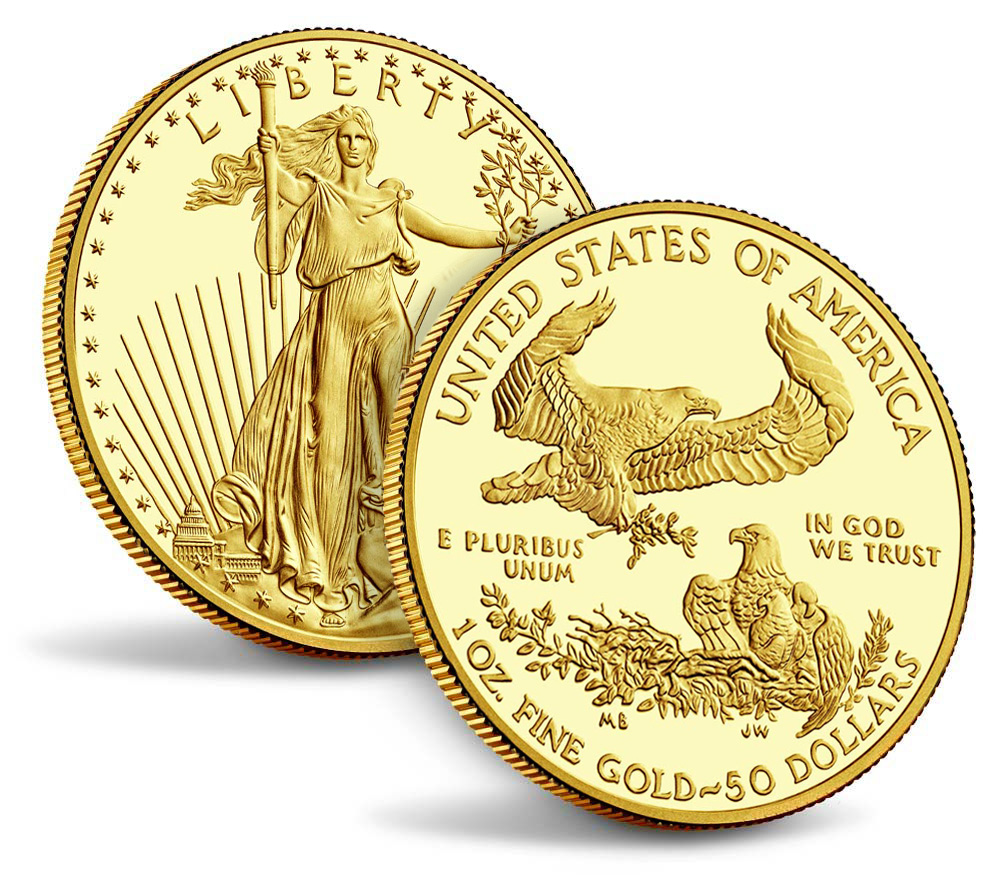

.NET
.NETNorth American Monetary eXchange

Why Gold & Silver?
Two forces erode a currency's purchasing power:
- inflation and
- rising debt burdens
Hedge Against Inflation Former Federal Reserve Chairman Alan Greenspan has observed that the abandonment of the gold standard made it possible for the welfare statists to use the banking system as a means to an unlimited expansion of credit. In the absence of a gold standard, it can be extremely difficult to protect savings from confiscation through inflation. Deficit spending in the end becomes a hidden confiscation of wealth. Accordingly, he concludes: “Gold stands in the way of this insidious process. It stands as a protector of property rights." As quoted in Fortune magazine in February, 2012, Warren Buffett warned that currency-based investments, thought of as "safe," in truth are among the most dangerous of assets, having destroyed purchasing power in many countries even as investors continued to receive timely payments of interest and principal. Prior to the adoption of the United States Constitution each State enjoyed sovereign authority to issue its own currency. Having witnessed first hand the ravages that purely fiat currencies wreaked on American society with inflation rates approaching 5,000% before, during and after the American Revolution, delegates to the Constitutional Convention were strongly inclined towards restricting emissions of paper currencies in America. Accordingly, under article 1 § 8 of the Constitution, Congress is granted power to "coin money, regulate the value thereof and of foreign coin". Section 10 of the same article prohibits states from "coining money or making anything but gold and silver coin a tender for payment of debts." As an exception to a prohibition, specie monetization (recognizing gold and silver coin as legal money) constitutes a reserved state power.